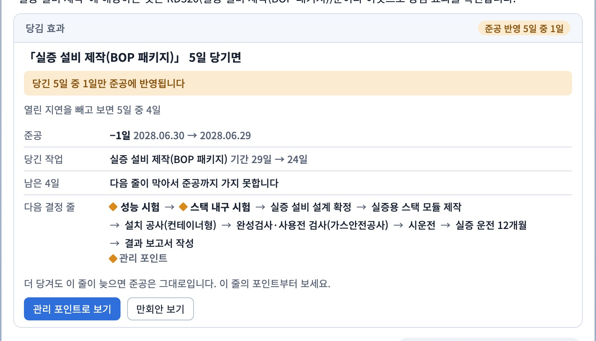

1
2
3
4
- 1준공 반영 5일 중 1일당긴 일수 가운데 준공에 실제로 반영되는 일수를 머리에 바로 보인다.
- 2판단 전에 경고반영 비율이 기준(설정값)보다 낮으면 노란 띠로 알린다.
- 3다음 결정 줄당긴 뒤 준공일을 좌우하는 작업은 커튼월 공장 제작 → 자재 반입 → 설치. ◆ 는 관리 포인트.
- 4바로 다음 행동[관리 포인트로 보기]로 그 줄의 바깥 위험과 담당자 연락으로 이어진다.

습관처럼 묻는다. "옥탑 골조를 5일 당기면?" 에이전트는 야간 작업을 넣기 전에 계산해서 보여 준다. 준공은 11-08 에서 11-06 으로 하루만 당겨지고, 그다음 준공일을 좌우하는 작업은 커튼월 공장 제작이다.
1-1 의 그 밤에 내가 몰랐던 것이다.
| 기능 | □ 작업을 n일 당겼을 때 준공에 반영되는 일수를 계산 □ 반영이 적으면 그다음 준공일을 좌우하는 작업을 제시 |
| 처리 방식 | ○ 계산: 코드(CPM·자원 맞춤) ○ 판단: 사람 ○ 일정은 바꾸지 않는 확인용 계산 |
| 시연 결과 | - 옥탑 골조 5일 단축 → 준공 2027-11-08 → 11-06 (1일) - 커튼월 지연 전 같은 단축 → 4일 반영 - 다음 결정 줄: 커튼월 공장 제작 → 자재 반입 → 설치 |
| 기대 효과 | - 야간 작업·장비 추가 비용의 헛수고 방지 - 준공 지연 시 지체상금 하루 1,500만 원(300억 원 공사 기준) 위험 감소 |